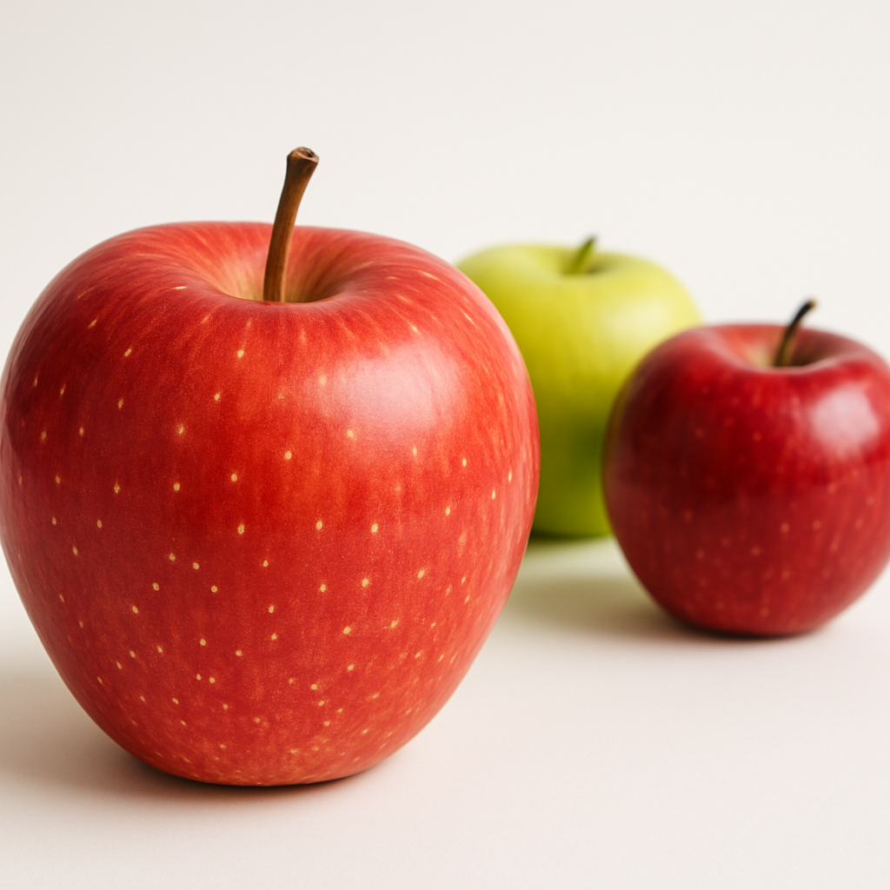

AI로 생성한 이미지예요
사과란?
사과는 정말 귀엽고 맛있는 과일이에요! 🍎🍏 사과는 단맛과 신맛이 잘 어우러져서, 한 입만 먹어도 기분이 좋아지죠. 그래서 언제나 우리 입맛을 사로잡는 과일이에요. 이제, 사과가 왜 그렇게 특별한지 귀엽게 한 번 살펴볼게요!
사과의 맛
사과는 달콤하고 상큼한 맛이 딱 맞는 균형을 자랑해요! 예를 들어, 홍로 사과는 달콤하면서도 살짝 신맛이 있어서 입안에서 맛이 춤추는 느낌! 🍏 또, 그린애플은 그 신선한 신맛이 매력적이죠. 언제 먹어도 맛있는 사과, 사랑하지 않을 수 없어요!
사과의 건강 효과
사과는 맛뿐만 아니라 건강에도 아주 좋답니다! 🌟
식이섬유가 풍부해서 소화를 도와주고, 배도 가득 채워줘서 다이어트에도 좋고요.
항산화 성분이 많아서 우리 몸을 깨끗하게 해주고, 비타민 C로 면역력도 챙길 수 있어요!
또 칼륨이 많이 들어있어서 심장 건강에 도움이 돼요. 그래서 사과는 맛있을 뿐만 아니라 우리 몸을 위한 슈퍼푸드예요!
사과의 다양한 활용법
사과는 그냥 먹는 것만큼 다양한 방법으로 즐길 수 있어요! 😋
생으로 먹기: 그냥 한 입 베어 물면 그 달콤하고 상큼한 맛이 입 안에 퍼져요.
주스와 스무디: 사과를 갈아서 만든 스무디나 주스는 정말 맛있고, 기분도 좋아지죠!
사과 파이: 사과와 시나몬이 만난 파이는 정말 사랑스러운 디저트예요. 🍏🥧
샐러드: 사과를 슬라이스로 잘라 샐러드에 넣으면 상큼하고 신선한 맛이 더해져요.